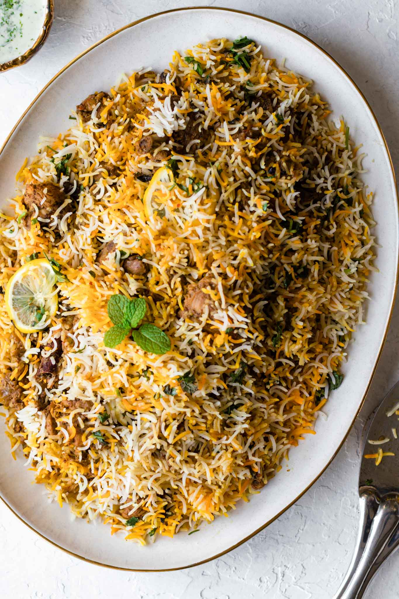

Biriyani

DESCRIPTION:
Behold! An authentic Chicken Biryani recipe with simple, easy-to-follow instructions (no curveballs!) and mouthwatering, traditional Pakistani and Indian flavor. This recipe includes tips on how to get fluffy rice, tender chicken, and the distinct biryani taste. Tested to perfection!
Chicken Biryani on a gold-trimmed platter with a silver rice spoon resting on the side
Ingredients:
- Oil/Ghee
- Onions
- Bone-in, cut up, skinless chicken
- whole spices
- Garlic + Ginger
- tomato
- yogurt
- rice
- Dried Plums (Alu Bukhara)
Steps:
- Marinate the chicken in spices and yogurt. This infuses the chicken with noticeable flavor. Ideally, marinate overnight or for at least a couple hours, but I tested and found that it’s still very tasty if you marinate just before making the biryani.
- Take the chicken out of the fridge before you start preparing the biryani. Allowing the chicken to come closer to room temperature helps it cook more evenly and stay tender.
- Lastly, after sautéing the chicken in the hot oil, add water and allow the chicken to simmer gently, covered, over low heat.
- At 3 minutes, the rice still has a raw center.
- At 4 minutes, the center has mostly cooked, but the rice kernel is still tough.
- Around 5 minutes, the rice starts to swell and the rice is just-cooked. In between 5 minutes and 5:30 seconds is when it’s ideal to stop boiling the rice.
- At 6 minutes, the rice is cooked, but starts to break easily without getting mushy.
- In between 7-8 minutes, the rice gets mushy once pressed between your fingers. This is a sign that it’s overcooked and is more likely to break during the ‘dum’ stage.
HomePage